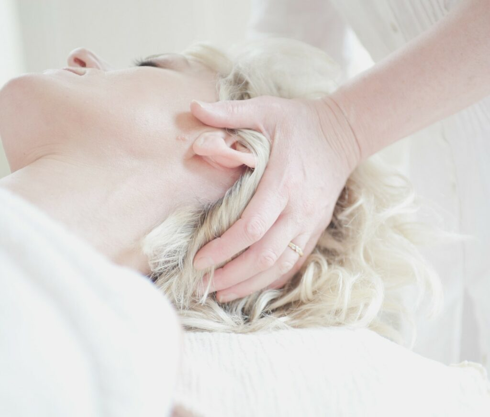
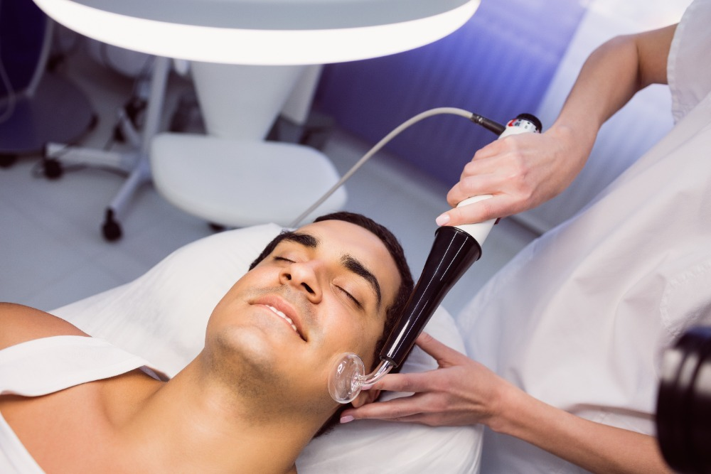
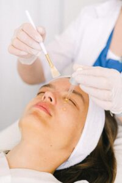
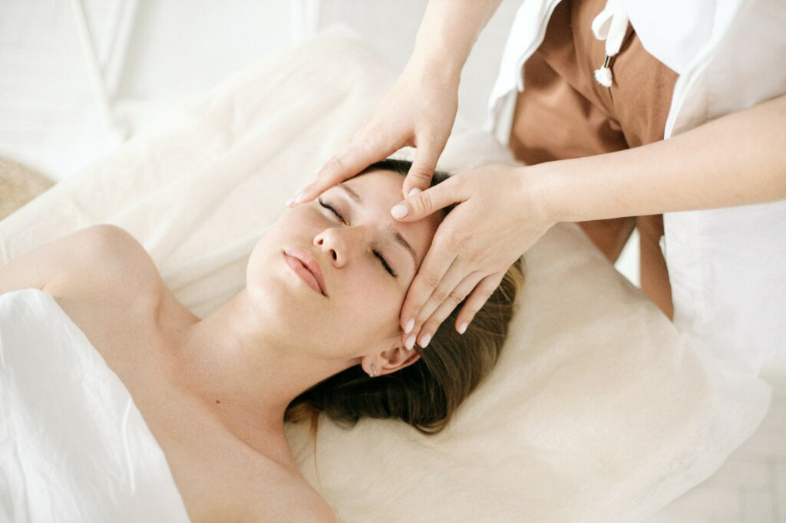
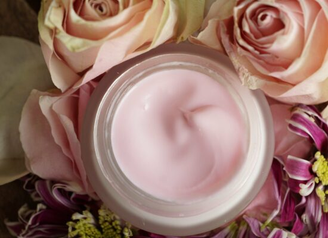

POPIS KOSMETICKÝCH OŠETŘENÍ
Nabídka je široká. Vybere si každý. Pro podrobnější informace o jednotlivých ošetřeních klikněte na + nebo přímo na podtržený název ošetření, o kterém se chcete dozvědět více..
AKČNÍ OŠETŘENÍ
Milé dámy,
malých radostí není nikdy dost. I já jsem Vám jich pár připravila. Kromě běžné nabídky ošetření, se můžete těšit na sezónní AKCE, kdy některá ošetření pro Vás připravuji se slevou. Je předjaří a délka zimního období se začíná propisovat do naší nálady i pleti. Co ji nastartovat JARNÍM DETOXEM , HLOUBKOVOU HYDRATACÍ a nebo MICRONEEDLINGEM?
JARNÍ DETOX PLETI /80 min/ 1390,- Kč
URČENO: Všem se znavenou pletí bez života. Všem, kteří chtějí svou pleť pořádně exfoliovat, vyčistit a nakopnout pořádnou dávkou minerálů.
POPIS:
1)Důkladné čištění pleti ultrazvukovou špachtlí a ozonizérem, který odstraní drobné nedostatky pleti a vyčistí a desinfikuje póry.
2)Masáž lávovými kameny, která působí nejen relaxačně, ale podporuje i odchod odpadních látek lymfou a působí detoxikačně.
3)Alginátová maska s mořskými řasami dodá pleti dostatek minerálů.
4) Koncentrované sérum podpoří regeneraci pleti.
CENA 1390,- Kč
HLOUBKOVÁ HYDRATACE PLETI /80 min/ 1390,- Kč
URČENO: Pro všechny, kteří pociťují, že jim zima vysušila pleť a přivítají skutečnou porci hydratace.
POPIS:
1)Důkladné čištění pleti a enzymatický peeling, tedy šetrné odstranění starších, odumřelých šupinek kůže.
2)Masáž lávovými kameny, která působí nejen relaxačně, ale i detoxikačně, neboť stimuluje odchod odpadních látek lymfou.
3) Hloubková hydratace pleti ultrazvukovou sondou, maska a sérum.
CENA 1390,- Kč
MICRONEEDLING NEBO-LI MIKROJEHLIČKOVÁNÍ /60 min/ 1750,- Kč
URČENO: Pro všechny, kteří mají rádi rychlé a viditelné výsledky. Tato metoda je stará, osvědčená a spolehlivá. A bezbolestná. Vhodná pro omlazení a osvěžení pleti, vhodná pro obnovu pleti a odstranění jizviček po akné.
POPIS:
1) Důkladné odlíčení a vyčištění pleti.
2) Nanesení koncentrovaného séra a boosteru, které pomůže pleti hloubkovou regeneraci.
3) Několik minut plynulého a důkladného jehličkování, které nebolí, pociťujete jen drobné obrušování kůže.
4)Zklidňující, opět silně koncentrovaná profesionální maska a sérum.
Cena je akční. Běžná cena za obličej, krk a dekolt je 2100,- Kč. Dnes za 1750,- Kč.
CENA: 1750,- Kč
KLASICKÁ KOSMETIKA S DŮKLADNOU MASÁŽÍ A TVAROVÁNÍM OBOČÍ
Základem klasické péče o pleť je důkladná kosmetická masáž. Ta uvolní mimické svaly, prokrví horní vrstvu pleti i podkoží, stimuluje látkovou výměnu i odchod odpadních látek lymfou ven z těla. Pleť je prozářená a mladší. Podle délky masáže, délky ošetření i typu masek a sér si můžete vybrat. Stačí kliknout na + nebo přímo na druh ošetření.
STANDARDNÍ PÉČE / 60 min/ 1080,- Kč/ nebo /90 min/ 1330,- Kč
URČENO: Pro všechny, kteří si rádi dopřejí klasickou kosmetiku a chtějí do sebe investovat rozumně a s rozvahou.
POPIS:
1) Důkladné odlíčení a čištění pleti.
2) Úprava obočí zdarma, za barvení obočí se připlácí 100 Kč, za barvení řas 150 Kč
3)Kosmetická masáž, u 90 min ošetření je delší.
4) Pleťová maska
5)Závěrečná péče ( krém)
CENA 1080,- Kč/ 1330,- Kč
KOMPLETNÍ OŠETŘENÍ AKNÓZNÍ PLETI/90 min/1300,- Kč
URČENO: Pro všechny, jež trápí pupínky, hlubší akné či jen zanesené póry. Pomocí hloubkového vyčištění pleti ultrazvukovou špachtlí, ručnímu dočištění,vakuuovému čištění a ozónové terapie lze účinně eliminovat projevy akné na pleti a urychlit hojení. V případě silnějších problémů je dobré ošetření opakovat či ho kombinovat pouze s čištěním pleti. Pomohu Vám nakombinovat ošetření do výhodného balíčku.
POPIS:
1) Odlíčení a omytí pleti černým mýdlem
2)Úprava obočí, barvení obočí a řas je možné za příplatek vždy 100 Kč za obočí a 150 Kč za řasy
3) Peeling a čištění ultrazvukovou špachtlí, vacuem a dočištění ozonizérem
4)Součástí může být i krátká masáž, pokud pleť není otevřená
5) Maska a vyrovnávací sérum
CENA / 90 min/ 1300,- Kč
Výhodný balíček 4x ošetření za 4600,- Kč
Možno provádět i samostatné čištění pleti. Pak se nabízí tyto varianty.
ČIŠTĚNÍ PLETI BEZ MASKY – ZÁKLADNÍ/40 min/400,- Kč
Jedná se o čištění ultrazvukovou špachtlí a ruční dočištění. Nutno připočítat cenu pleťové masky od 100 Kč do 250 Kč.
Výhodný balíček 4x čištění za 1200 ,- Kč
ČIŠTĚNÍ PLETI BEZ MASKY – INTENZIVNÍ/60 min/880,- Kč
Jedná se o čištění ultrazvukovou špachtlí, vacuem a ozonem. Nutno připočítat cenu pleťové masky od 100 Kč do 250 Kč.
Výhodný balíček 4x čištění za 3000,- Kč
LUXUSNÍ PÉČE /60 min/1260,- Kč/ 90 min/ 1550,- Kč
URČENO: Pro ženy, které berou péči o sebe jako investici do budoucna a mají chuť získat to nejlepší.
Využívají se velmi kvalitní a koncentrovaná séra a masky. Rozdílem mezi 60 min. a 90 min. ošetřením je v délce masáže a možnosti důkladněji zapracovat séra.
POPIS:
1) Odlíčení a hloubkové čištění pleti
2)Úprava a barvení obočí a řas, úprava je v ceně, za barvení se připlácí 100,- K za obočí a 150,- Kč za řasy
3)Důkladná kosmetická masáž
4) Koncentrovaná maska a nakonec zapracování séra.
U ošetření na 90 min. je navíc další maska s doplňkem minerálů a kosmetická masáž je delší.
Luxusní ošetření je zaměřeno na specifické potřeby pleti, na intenzivní hydrataci, výživu, lifting, anti- age péči či péči o citlivou pleť. Anti age ošetření není určeno jen pro zralou pleť, je pro všechny věkové kategorie již od 35+. Dle věku a typu pleti jsou využívány různé masky a séra intenzivně podporující regeneraci pleti.
Každý věk potřebuje jiné výživné látky. Máme širokou paletu možností, jak zpomalit stárnutí přirozenou cestou a navrátit pleti vlhkost, pružnost a svěží vzhled.
Wow efekt je viditelný a toto ošetření je tedy vhodné i před večerní akcí.
OŠETŘENÍ PRO PÁNY/60 min/1080,- Kč
URČENO: Pro moderní muže všeho věku, kteří by rádi osvěžili svou pleť, protože vypadá unaveně, nebo pro ty muže, jež trápí akné, žilky či vrásky. Kosmetická péče je dnes muži hojně využívána. Rozhodně je to příjemný zážitek. Vybrala jsem pro Vás speciální masky vhodné pro mužskou pleť, a kosmetickou masáž, která uvolní i Vaši šíji. Ošetření je příjemné, relaxační a účinek na pleť Vás mile překvapí. V případě akné lze doplnit i čištěním vacuem a ozónovou terapií za příplatek 200,- Kč.

PŘÍSTROJOVÉ OŠETŘENÍ
Proč využít přístroje? Moderní technologie jsou výrazným pomocníkem jak efektivně a dlouhodobě zpomalit stárnutí pleti. Já využívám neinvazivní metody, neboť ctím přirozený vzhled obličeje. Pleť pomocí přístrojů jen „probouzím“, aby obnovovala své regenerační procesy a lépe využívala dodané účinné látky ze sér a masek. Všechny procedury jsou bezbolestné, maximálně lehce poštipují. Po žádném z ošetření neodcházíte červené, rozpíchané či strupovité. Ošetření jsou příjemná.
Upozornění: Volba metody přístrojového ošetření je vždy po konzultaci s kosmetičkou. Jsou prováděny certifikovanými přístroji a je potřeba vyplnit zdravotní dotazník, abychom minimalizovali alergické reakce a maximalizovali benefity.
JAK FUNGUJE ULTRAZVUK ? Ultrazvuk díky svým podélným vlnám vniká do hlubších vrstev kůže, stimuluje kolagenová vlákna a lepší hojení po akné. Snižuje pigmentace, hlouběji zapracovává séra , lépe hydratuje pleť a rychleji spouští samoregeneraci pleti.
URČENO: Určeno všem moderním ženám či mužům, či dospívajícím, kteří mají rády rychlejší výsledek nebo dávají přednost intenzivnějšímu ošetření . Lze využít v každém věku. Je vhodné jako vzpruha před večírkem, ošetření pro podporu hojení aknózní pleti, jako účinné anti- age ošetření. Nelze provádět u klientů s onemocněním srdce, nádorovým onemocněním, těhotenstvím. Podrobnější kontraindikace naleznete v sekci „Obchodní podmínky“.
ULTRAZVUKOVÁ HLOUBKOVÁ HYDRATACE A HLOUBKOVÁ VÝŽIVA PLETI , JINAK TÉŽ MEZOTERAPIE BEZ JEHLIČEK. /60 min/ 1440,- Kč, / 90 min/ 1650,- Kč
POPIS:
Ošetření obsahuje úpravu obočí , barvení obočí a řas za příplatek vždy 100 Kč za obočí a 150,- K za řasy, čištění ultrazvukovou špachtlí a jemné ruční dočištění. Stimulaci obličeje pomocí ultrazvuku 45 min. a KLASICKOU RUČNÍ MASÁŽ u 90. min. ošetření, Na závěr se aplikuje výživná masku a zapracovávají se séra a ampule.
Tuto ultrazvukovou stimulaci lze na 20 min přidat ke každému ošetření pleti a pak je to za jednotnou cenu 300,- Kč/20 min.
JAK FUNGUJE ULTRAZVUK ? Ultrazvuk díky svým podélným vlnám vniká do hlubších vrstev kůže a otvírá mezibuněčné kanálky, tím se obsah mazových žláz dostává neinvazivně na povrch kůže a zrychluje se hojení akné. Snižuje se pigmentace, hlouběji zapracovává séra a výživné ampule a spouští samoregeneraci pleti.
URČENO: Určeno všem , kteří ocení intenzivnější čištění pleti. Čištění je bezbolestné.
Nelze provádět u klientů s onemocněním srdce, nádorovým onemocněním, těhotenstvím. Podrobnější kontraindikace naleznete v sekci „Obchodní podmínky“.
ČIŠTĚNÍ ULTRAZVUKOVOU ŠPACHTLÍ /40min/ 480,-Kč/ 60,- Kč /880 Kč
URČENO: Vhodné pro všechny, kteří potřebují vyčistit pleť od pupínků, černých teček, nebo jen prozářit a odstranit odumřelé buňky.
POPIS: Bezbolestné čištění pleti prováděné na odlíčený obličej. Lze jen kratší variantu na 40 min, nutno připlatit masku v hodnotě 100,- Kč nebo 250,- Kč v případě alginátových masek. Toto čištění bývá doplněno ručním čištěním.
V případě čištění na 60 min. se doplňuje čištění vacuuem a ozonizérem, který důkladně vyčistí póry a desinfikuje je, čímž se napomáhá hojení.
Čištění u akńozní pleti zpravidla nemá výsledky u jednorázového ošetření, pro opakované návštěvy lze vybrat výhodné balíčky.
4x základní čištění na 40 min, za 1200 ,- Kč
4x intenzivní čištění na 60 min, za 3000,- Kč
4x kompletní péče o akńozní pleť na 90 min, za 4600,- Kč
Balíčky lze nakombinovat dle Vašich finančních možností a stavu pleti.
RADIOFREKVENČNÍ LIFTING, OKAMŽITÉ OMLAZENÍ /40min/ 780,- Kč/ 60 min/ 1440,- Kč/90 min/1650,-Kč
JAK FUNGUJE RADIOFREKVENCE? Radiofrekvenční vlny zahřívají pleť od povrchu do hloubky a vypínají ji, gumují vrásky. Už během 30ti minut perfektně vypnou obličej, nastartují samooregeneračních procesy, prozáří pleť.
URČENO: Vhodné pro unavenou nebo starší pleť nebo jako okamžitá vzpruha před večerní akcí. Při pravidelném používání výrazně zpomaluje známky stárnutí. Jde o velmi účinný a příjemný lifting. Nelze provádět u klientů s onemocněním srdce, nádorovým onemocněním, těhotenstvím. Podrobnější kontraindikace naleznete v sekci „Obchodní podmínky“ či sekci přístroje. O balíčku se dočtete níže. Toto ošetření lze totiž provádět nejen samostatně, ale i jako kůru 4 – 6 ti ošetření v kratším časovém rozestupu a tím docílit dlouhodobější efekt.
RADIOFREKVENČNÍ LIFTING JEDNÉ ZÓNY/ 40 min/ 780,- Kč
POPIS: Ošetření obsahuje odlíčení a aplikaci aktivačního gelu s kolagenem a elastinem, který zvyšuje průnik radiofrekvenční energie. Poté radiofrekvenční sonda krouživými pohyby pleť prohřívá a stimuluje kolagenová vlákna. Výsledek je okamžitý po jediném ošetření. Účinek na pleť se stupňuje ještě 14 dnů, poté postupně mizí. Pro delší efekt je lepší zvolit 4ošetření, po týdnu. Výsledek vydrží déle, až 6 měsíců. Toto ošetření není vhodné pro pleť se žilkami.
RADIOFREKVENČNÍ LIFTING, OMLAZENÍ/ 60 min/ 1440,- Kč/90 min/ 1650,- Kč
POPIS: Ošetření obsahuje odlíčení, úpravu obočí, čištění pleti špachtlí a aplikaci aktivačního gelu s kolagenem a elastinem, který zvyšuje průnik radiofrekvenční energie. Poté radiofrekvenční sonda krouživými pohyby pleť prohřívá a stimuluje kolagenová vlákna. Pro lepší efekt, aplikace masky. U ošetření na 90 min, je délka radiofrekvenční stimulace delší a následuje ještě manuální masáž pleti.
Nutný pitný režim. Nelze provádět u klientů s onemocněním srdce, nádorovým onemocněním, těhotenstvím. Podrobnější kontraindikace naleznete v sekci „Obchodní podmínky“.
RADIOFREKVENČNÍ LIFTING JAKO DOPLNĚK K BĚŽNÉMU OŠETŘENÍ, 1 ZÓNA /20 min/ 300,- Kč
KOMBINOVANÉ OŠETŘENÍ RADIOFREKVENCE A ULTRAZVUK /120 min/ 1950,- Kč
JAK FUNGUJE ULTRAZVUK ? Ultrazvuk díky svým podélným vlnám vniká do hlubších vrstev kůže a zajišťuje lepší hojení po akné, snížuje pigmentace, hlouběji zapracovává séra a výživné ampule, lépe hydratuje pleť a rychleji spouští samoregeneraci pleti. Stimuluje kolagenová vlákna.
JAK FUNGUJE RADIOFREKVENCE? Radiofrekvenční vlny zahřívají pleť od povrchu do hloubky a vypínají ji, gumují vrásky. Už během 30ti minut perfektně vypnou obličej, nastartují samooregeneračních procesy, prozáří pleť.
URČENO: Vhodné pro unavenou nebo starší pleť nebo jako okamžitá vzpruha před večerní akcí. Při pravidelném používání výrazně zpomaluje známky stárnutí. Jde o velmi účinný a příjemný lifting a výživu pleti. Nelze provádět u klientů s onemocněním srdce, nádorovým onemocněním, těhotenstvím. Podrobnější kontraindikace naleznete v sekci „Obchodní podmínky“ či sekci přístroje.
OZÓNOVÁ TERAPIE, ŘEŠENÍ PRO AKNÓZNÍ PLEŤ, ČIŠTĚNÍ A DESINFEKCE PÓRŮ/20min/ 300,- Kč
JAK FUNGUJE OZONIZÉR?
Vysoká frekvence produkuje vysokovibrační vlnění, které se dostává do pleti skleněným nástavcem. Uvnitř nástavce se nachází 2 plyny neon a argon. Vysokovibrační vlnění se transformuje v teplo a produkuje ozon, který má výrazné sterilizační a dezinfekční účinky. Ošetření je bezbolestné a velmi účinné.
URČENO: pro všechny, kteří potřebují zklidnit a desinfikovat pleť či penetrovat účinné látky.
Ozónová terapie jako doplněk k běžnému ošetření / 15 min/ 250,- Kč
POPIS: Jemnými tahy různými skleněnými nástavci po pleti se pleť zklidňuje a dezinfikuje. Každý nástavec se využívá pro jinou část obličeje či vlasové části. Provádí se na závěr běžného kosmetického ošetření.
Ozónová terapie se využívá k ěžnému ošetření pleti jako závěrečná péče, a to za příplatek 300,- Kč
URČENO: Toto ošetření je určeno jako top ošetření v péči o aknózní pleť, pro všechny, kteří chtějí v relativně krátkém čase nastartovat proces hojení.

SPECIÁLNÍ OŠETŘENÍ
Tato ošetření řeší konkrétní nedostatky pleti. Jsou zaměřena na obnovu horní vrstvy kůže a hloubkovou regeneraci. Jsou vhodná zejména k řešení jizviček po akné, ke sjednocení barevnosti pleti, k eliminaci jemných vrásek a drobných nedostatků jako je pigmentace. Nabízím Microneedling a AHA peeling. V obou případech se musíte chránit po ošetření krémy s vysokým SPF.
Lze využít jednorázově a okamžitě uvidíte efekt, ale pokud svou pleť chcete skutečně ozdravit pak doporučuji opakovat alespoň 4x. Pro tento případ opakování, jsou připraveny výhodné pěstící balíčky s lepší cenou. Klikněte na + či na ošetření, které Vás zajímá a dozvíte se více.
ŠETRNÝ PEELING AHA KYSELINKAMI / 60 min./ 1280,- Kč / 90 min/ 1600,- Kč
URČENO: Tento jemný, neinvazivní peeling je vhodný pro každý typ pleti. Ocení ho ti, kteří chtějí pleť prozářit, barevně sjednotit. Je to ošetření, které výrazně zlepšuje i stav rozšířených žilek. Pokud máte hrubší pleť a potřebujete zjemnit texturu pleti, toto je jedna z metod, která mile překvapí. Aknózní pleť zaznamená rychlejší proces hojení a vyčištění zanícených pupínků. Je to také ideální jako rychlá vzpruha pleti, neboť udržuje v pleti vodu.
POPIS:
Jedná se o šetrné ošetření bez chemie s výsledkem podobným chemickému peelingu, jen nezčervenáte a neoloupete se. Nemusíte se bát ani alergické reakce, není použita chemie. Jen AHA ovocné kyselinky v bezpečných koncentracích, které proniknou hluboko do pokožky a zespodu ji hydratují, vyživují a tedy i vyhlazují. Horní povrchovou vrstvu šetrně rozpustí a odstraní, čímž se pleť sjednotí barevně, vyhladí a projasní. Je to skvělé ošetření s viditelným a velmi příjemným účinkem. Stačí jedno ošetření. Kyselinky jsou šetrné a po jejich aplikaci se budete cítit příjemně, čistě a fresh. Toto ošetření vřele doporučuji.
Při ošetření na 90 min, si užijete ještě dlouhou masáž, která zapracuje kyselinky hlouběji do pleti a v kombinaci s mořskými řasami v koncentrovaném séru posunou péči k vyššímu efektu na pleti.
Je možné využít i balíček 4 ošetření.
POZOR: Lze provádět jen od září do dubna, klient se 14 dnů před a 14 dnů po ošetření musí vyvarovat slunci a pleť ošetřovat krémem s vysokým faktorem SPF 30 – 50.
MICRONEEDLING, MIKROJEHLIČKOVÁNÍ/60 min /dekolt/1200,- Kč/obličej/1750,- Kč/Obě zóny/ 2100,- Kč
URČENO: Ocení ho ti, kteří chtějí pleť prozářit, barevně sjednotit, odstranit jizvičky po akné nebo jemné vrásky.
POPIS:
toto ošetření je špička v péči o pleť, je to stará a osvědčená metoda, kdy jemným narušením horní vrstvy pleti vytvoříme microkanálky a umožníme koncentrovaným sérům lepší penetraci do hlubších vrstev. Ošetření nebolí, pociťujete ho jako jemné obrušování kůže. Tímto způsobem se nastartuje pleť k rychlejší samoregeneraci. Pokud máte hrubší pleť a potřebujete zjemnit texturu pleti, toto je jedna z metod, která mile překvapí. Aknózní pleť zaznamená rychlejší proces hojení a odstranění jizviček . Jedná se vskutku o intenzivní a efektivní péči. Vřele doporučuji ženám, které si to finančně mohou dovolit, protože jejich pleť dostane skutečnou dávku intenzivní péče.
POZOR: Lze provádět jen od září do dubna, klient se 14 dnů před a 14 dnů po ošetření musí vyvarovat slunci a pleť ošetřovat krémem s vysokým faktorem SPF 30 či SPF 50.
Toto ošetření provádím vždy v pátek, protože citlivější pleť může lehce začervenat. 48 hodin po aplikace není možné použít make up.
Lze také použít výhodný balíček 4 ošetření. Právě 4 ošetření po cca 10 dnech zajistí dlouhodobý a intenzivní účinek.

DOPLŃKOVÁ PÉČE K BĚŽNÉMU OŠETŘENÍ
Při běžném ošetření je možné využít také různá doplňková ošetření
PŘÍSTROJOVÁ PÉČE JAKO DOPLNĚK
Lze využít:
ULTRAZVUKOVOU STIMULACI /20 min/ 300,- Kč
RADIOFREKVENČNÍ LIFTING/20 min/ jedna zóna/ 300,- Kč
OZÓNOVÁ TERAPIE/20 min/ 300,- Kč
MICRONEEDLING, ZAPRACOVÁNÍ SÉR/20 min/nanonástavec/480,- Kč
KONTRAINDIKACE PŘÍSTROJOVÝCH OŠETŘENÍ:
Těhotenství, kojení, kardiostimulátor a onemocnění srdce, cukrovka, onkologické onemocnění, autoimunitní onemocnění.
PARAFÍNOVÝ ZÁBAL NA RUCE/200,- Kč/
Parafínové zábaly působí blahodárně na nervovou soustavu a poskytují ochranu drobným kloubům. Teplo rozšiřuje cévy, zlepšuje prokrvení pokožky a působí příznivě na zlepšení regenerace svalových spazmů. Po zábalu jsou ruce velmi dobře odpočinuté a samozřejmě se dostavuje také vysoký kosmetický efekt. Ruce jsou hladké a hebké.
PARAFÍNOVÝ ZÁBAL NA CHODIDLA/250,- Kč/

MASÁŽ OBLIČEJE, KRKU, ŠÍJE, DEKOLTU
Masáž je základem kvalitní kosmetické péče. Funguje jako výrazný relaxační prvek, uvolňuje mimické svalstvo, odbourává stres a spouští tvorbu serotoninu. Má však také své opodstatnění z hlediska fungování pleti. Pleť prokrví, prohřeje, zlepší mikrocirkulaci a podpoří odtok lymfy. Tím je pleť nejen uvolněná, prozářená, ale mírní se i otoky obličeje a zpevňují kontury. Masáž si lze vždy vybrat v rámci kosmetického ošetření nebo samostatně. Vždy je doplněna maskou na závěr.
Zvýhodněné Balíčky a kúry
Některá ošetření je vhodné provádět opakovaně nebo v určitých kombinacích. Proto jsme pro Vás připravili cenově zvýhodněné balíčky. Získáte tedy lepší cenu na vybrané ošetření, ale pokud si zakoupíte balíček 4 ošetření , získáte také nárok na slevu 300 Kč na jakékoliv další ošetření v dalších 90ti dnech.
JAK FUNGUJE ULTRAZVUK?
Ultrazvuk díky svým podélným vlnám vniká do hlubších vrstev kůže a lepší hojení po akné, snIžuje pigmentace, hlouběji zapracovává séra a výživné ampule, lépe hydratuje pleť a rychleji spouští samoregeneraci pleti.
Ultrazvukové ošetření expres – balíček (4x 40 min ošetření) 2300,- Kč
Ultrazvukové ošetření – mezoterapie obličej, krk dekolt, (4x 95 ošetření) 5200,- Kč
Ultrazvukové ošetření mezoterapie s radiofrekvencí 1 zóna, (4x 110 min ošetření) 5600,- Kč
JAK FUNGUJE RADIOFREKVENCE ? Radiofrekvenční vlny zahřívají pleť od povrchu do hloubky a vypínají ji, gumují vrásky, odbourávají tukové poštářky. Výsledek je okamžitý po jediném ošetření. Pleť vydrží vypnutá cca týden, 14 dnů. Pro delší efekt je lepší zvolit 4ošetření, výsledek vydrží déle, až 6 měsíců. Toto ošetření není vhodné pro pleť se žilkami.. Nelze provádět u klientů s onemocněním srdce, nádorovým onemocněním, těhotenstvím. Podrobnější kontraindikace naleznete v sekci „Obchodní podmínky“.
Radiofrekvenční ošetření jedné zóny (4x 40 min ošetření) 2300,- Kč
Radiofrekvenční ošetření obličeje, krku, dekoltu,4x 85 ošetření, 5900,- Kč
Kompletní omlazení pomocí radiofrekvence, ultrazvuku, maska – balíček ( 4x 120 min ošetření) 7000,- Kč
Určeno: Tento jemný, neinvazivní peeling je vhodný pro každý typ pleti. Ocení ho ti, kteří chtějí pleť prozářit, barevně sjednotit. Je to ošetření, které výrazně zlepšuje i stav rozšířených žilek. Pokud máte hrubší pleť a potřebujete zjemnit texturu pleti, toto je jedna z metod, která mile překvapí. Aknózní pleť zaznamená rychlejší proces hojení a vyčištění zanícených pupínků. Je to také ideální jako rychlá vzpruha pleti neboť udržuje v pleti vodu.
Popis: Jedná se o šetrné ošetření bez chemie s výsledkem podobným chemickému peelingu, jen nezčervenáte a neoloupete se. Nemusíte se bát ani alergické reakce, není použita chemie. Jen AHA ovocné kyselinky v bezpečných koncentracích, které proniknou hluboko do pokožky a zespodu ji hydratují, vyživují a tedy i vyhlazují. Horní povrchovou vrstvu šetrně rozpustí a odstraní, čímž se pleť sjednotí barevně, vyhladí a projasní. Je to skvělé ošetření s viditelným a velmi příjemným účinkem. Stačí jedno ošetření. Kyselinky jsou šetrné a po jejich aplikaci se budete cítit příjemně, čistě a fresh. Toto ošetření vřele doporučuji.
Pozor: Lze provádět jen od září do dubna, klient se 14 dnů před a 14 dnů po ošetření musí vyvarovat
slunci a pleť ošetřovat krémem s vysokým faktorem SPF 30 – 50.
V případě, že je Váš problém závažný ( silnější akné, větší množství pigmentací, větší množství jizviček, větší množství vrásek, povadlá a dehydrovaná pleť či silná kuperóza) doporučuje se ošetření opakovat. Ideálně po 4 dnech až týdnu. V tomto případě lze využít zvýhodněný balíček 4 ošetření. Hodí se pro jakýkoliv druh pleti i velmi citlivou či ekzematickou.
4x 40 minut 3700,- Kč
AHA peeling bez masáže.
4x 55 min 4400,- Kč
AHA peeling s masáží a úpravou obočí, obličej, krk dekolt.
4x 95 min 5800,- Kč
AHA peeling – luxusní péče v kombinaci s termální kosmetikou IXYA, s maáží, dermořasami, úprava i barvení obočí.
Balíčky lze vzájemně kombinovat. Cenu dohodneme. Při využití balíčku získáte 300 Kč slevu na další jakékoliv ošetření z nabídky v dalších 90ti dnech.
Problémy s akné lze řešit buď klasickým systematickým ošetřením pleti, ultrazvukovým ošetřením, které napomáhá hojení či čištění anebo AHA peelingové ošetření, které napomáhá hojení a harmonizaci pleti.
Balíček 4x ošetření na 40 či 60 min, získáte slevu 400 Kč dle ceníku. ( Tedy 4x cena dle ceníku mínus 400,- Kč sleva = Vaše cena.) ceník v sekci Akńozní pleť.
Balíček 4 ošetření 90 min je sleva 700,- Kč (Tedy 4x cena dle ceníku mínus 700,- Kč sleva = Vaše cena.)ceník v sekci Akńozní pleť.
Balíček lze sestavit na míru, vždy 4 ošetření pro aknózní pleť dle vaší preference, pak Vám slevu vypočítám.
